User's Manual
Torpedo Captor
The compact loadbox and amp DI
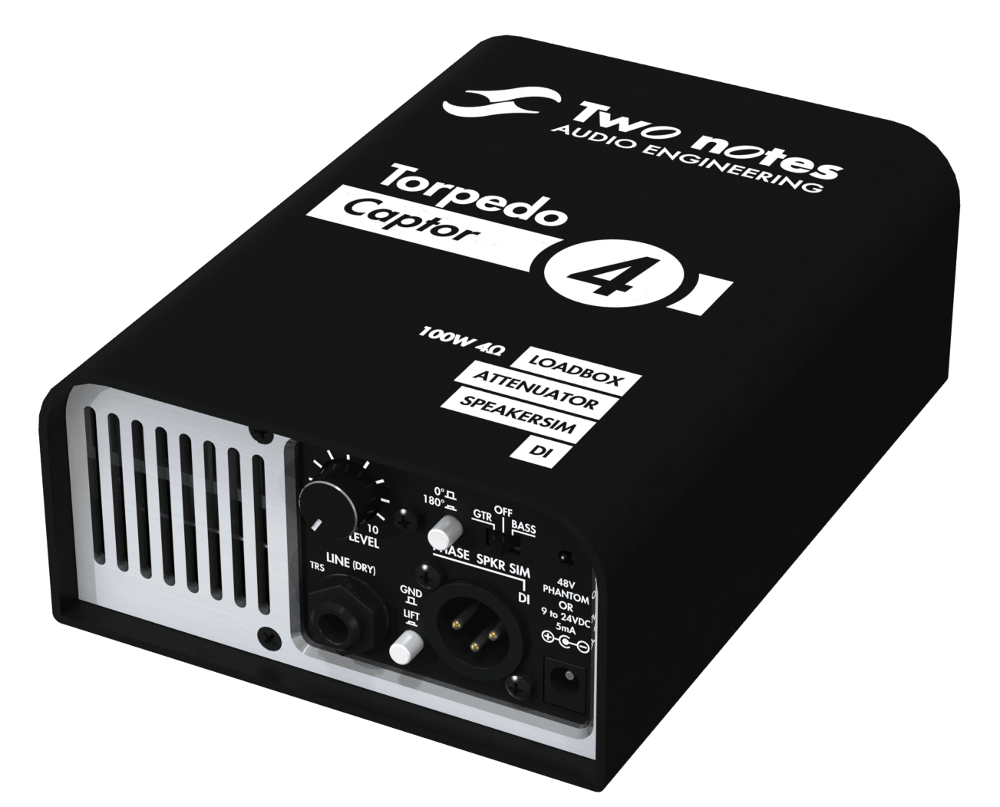
About this manual
The complete electronic version of this manual, as well as the Two notes Audio Engineering software and hardware products, are subject to updates. You can download the most recent versions of the products on the Two notes Audio Engineering website.
This manual describes the Torpedo Captor and provides instructions for its operation. It is highly recommended that you read this document before using the product. The contents of this manual have been thoroughly verified and it is believed, unless stated otherwise, to accurately describe the product at the time of shipment from the factory or download from our website.
Two notes Audio Engineering is a registered trademark of:
OROSYS SAS
76 rue de la Mine
34980 Saint-Gély-du-Fesc
France
Tel: +33 (0)484 250 910
Fax: +33 (0)467 595 703
Contact and support: http://support.two-notes.com
Website: http://www.two-notes.com
This document is the exclusive property of OROSYS SAS. In the interest of product development, OROSYS SAS reserves the right to change technical specifications, modify and/or cease production without prior notice. OROSYS SAS cannot be held responsible for any damage, accidental or otherwise, that results from an inappropriate use of the Torpedo Captor. Please refer to the safety instructions included in this manual. The reproduction of any part of this document is strictly forbidden without the written authorization of OROSYS SAS.
All product names and trademarks are the property of their respective owners. Product names and trademarks found in this document were used during the development of the Torpedo Captor product but are in no way associated or affiliated with OROSYS SAS.
Foreword
1. Safety instructions
Before using the product, it is necessary to carefully read and to bear in mind the following information. Keep this document in a safe place as it is important for the protection of both user and product. Should you suspect any malfunction of the device, always seek the assistance of a qualified technician.
1.1 Risk of electric shock
The triangle with a lightning bolt means that some parts of the product, even when the power is turned off or unplugged, can retain voltage high enough to cause serious electric shock. Any operation that requires opening the device should be left to a qualified technician.
1.2 Reader warning
The triangle with an exclamation mark highlights important messages concerning the correct use of the device.
1.3 Conditions for safe use
The Torpedo Captor must never be used near a heat source, near a flame, in the rain, in damp areas, near any liquid of any sort. When transporting the unit, care needs to be taken to avoid any shocks that could cause damage that would require the assistance of a qualified technician.
Do not connect to the Torpedo Captor an amp whose RMS power is over the admissible power of the Torpedo Captor (100W RMS).
1.4 Cleaning
Always use a piece of dry and soft cloth with no alcohol or solvents for cleaning. Please keep the unit clean and free from dust.
1.5 Maintenance
All maintenance operations must be performed by service centers approved by OROSYS SAS or by qualified technicians. Never try to repair the machine by yourself.
2. Contents of the package
The shipped package contains:
- One Torpedo Captor unit in a protecting sleeve,
- One Quick Start Guide.
The complete electronic version of this manual, as well as the Torpedo Remote and Torpedo BlendIR software, are subject to updates. You can download the most recent versions of these products on the Two notes Audio Engineering website.
3. Declaration of conformity
Manufacturer: OROSYS SAS
Category of product: digital audio signal processor
Product: Torpedo Captor
Test Manager: Guillaume Pille
The Two notes Torpedo Captor is certified to be compliant to the CE and FCC standards:
- EN 55103-1 : 1996 and EN 55103-2 : 1996.
- EN 60065 05/2002 + A1 05/2006.
- EMC directive 89/336/EEC and Low Voltage Directive 73/23/EEC.
- FCC Part 15 : 2008.
- ICES-003 : 2004.
- AS/NZS 3548 class B for Australia and New Zealand.
- IEC : 2008 - CISPR 22 class B.
4. Disposal of Waste Equipment by Users in Private Household in the European Union
This symbol on the product or on its packaging indicates that this product must not be disposed of with your other household waste. Instead, it is your responsibility to dispose of your waste equipment by handing it over to a designated collection point for the recycling of waste electrical and electronic equipment. The separate collection and recycling of your waste equipment at the time of disposal will help to conserve natural resources and ensure that it is recycled in a manner that protects human health and the environment. For more information about where you can drop off your waste equipment for recycling, please contact your local city office, your household waste disposal service or the shop where you purchased the product.
5. Warranty
OROSYS SARL warrants that this TWO NOTES AUDIO ENGINEERING product shall be free of defects in parts and workmanship when used under normal operating conditions for a period of two (2) years from the date of purchase. This warranty shall apply to the original purchaser when purchased from an Authorized TWO NOTES AUDIO ENGINEERING dealer.
IMPORTANT: PLEASE RETAIN YOUR SALES RECEIPT, AS IT IS YOUR PROOF OF PURCHASE COVERING YOUR LIMITED WARRANTY. THIS LIMITED WARRANTY IS VOID WITHOUT YOUR SALES RECEIPT.
Defective products that qualify for coverage under this warranty will be repaired or replaced (at OROSYS SAS’s sole discretion) with a like or comparable product, without charge. In the event that warranty service be required, please contact your authorized TWO NOTES AUDIO ENGINEERING dealer in order to obtain an RMA to return the complete product to the Authorized TWO NOTES AUDIO ENGINEERING Service Center closest to you, with proof of purchase, during the applicable warranty period.
Transportation costs to the service center ARE NOT INCLUDED in this limited warranty. OROSYS SAS will cover the cost of standard ground return transportation for repairs performed under this warranty.
This limited warranty becomes void if the serial number on the product is defaced or removed, or if the product has been damaged by alteration, misuse including connection to faulty or unsuitable ancillary equipment, accident including lightning, water, fire, or neglect; or if repair has been attempted by persons not authorized by OROSYS SAS.
Any implied warranties, including without limitation, any implied warranties of merchantability or fitness for any particular purpose, imposed under state or provincial law are limited to the duration of this limited warranty. Some states or provinces do not allow limitations on how long an implied warranty lasts, so the above limitations may not be applicable.
OROSYS SAS ASSUMES NO LIABILITY FOR PROPERTY DAMAGE RESULTING FROM ANY FAILURE OF THIS PRODUCT NOR ANY LOSS OF INCOME, SATISFACTION, OR DAMAGES ARISING FROM THE LOSS OF USE OF SAME DUE TO DEFECTS OR AVAILABILITY OF IT DURING SERVICE.
In case you must absolutely send your TWO NOTES AUDIO ENGINEERING product to any other location, it is of vital importance that you keep the original packing material. It is very difficult to avoid damage when shipping the product without that material. OROSYS SAS is not responsible for damages caused to the product by improper packaging and reserves the right to charge a reboxing fee for any unit returned for service without the original packing material.
THE FOREGOING CONSTITUTES THE ONLY WARRANTY MADE BY OROSYS SAS WITH RESPECT TO THE PRODUCTS AND IS MADE EXPRESSLY IN LIEU OF ALL OTHER WARRANTIES EXPRESSED OR IMPLIED.
Recommendation on the proper use of a loadbox with a tube amplifier
1. What is a loadbox?
In the normal use of a tube amplifier, it is highly recommended that you always connect its power output to a speaker cabinet prior to powering it up. The speaker cabinet (4, 8 or 16 Ohms) must always be connected to the corresponding speaker output of your amplifier. Not doing so can lead to partial or complete destruction of the output stage of the tube amplifier.
Most tube amplifier makers protect their products with fuses or other protection systems, however some amplifiers are still insufficiently protected. It is impossible to predict the behavior of all the amplifiers on the market in case of use without a load (a speaker cabinet or a loadbox).
The electronic term that describes the speaker cabinet with respect to the amplifier is the “load”: we say the cabinet “loads” the amplifier. The term “loadbox” is used to describe any product that provides a load to the amplifier. The main parameter of the loadbox is its impedance, expressed in Ohms. An 8-Ohm loadbox must be plugged to the 8-Ohm speaker output of the amplifier.
The power sent to the load is turned into heat, so please follow the cooling recommendation of the loadbox — otherwise overheating may cause damage, both to the loadbox and to the amplifier.
The Torpedo Captor is a loadbox. This term indicates that the Torpedo Captor is a load which can electrically replace the speaker cabinet while dissipating (transforming into heat) the power coming out of the amplifier.
Within the Torpedo Captor is a Reactive load. A Reactive load simulates the complex impedance of a real speaker.
Always connect the speaker output of your tube amplifier to an appropriate load (speaker cabinet or loadbox). The Torpedo Captor is such a load. The Torpedo Captor does not need to be powered up to act as a loadbox. The maximum admissible power of the Torpedo Captor is 100W RMS, your amplifier shouldn't be set to play at a higher output power value. See this article if your amplifier is more powerful than 100W.
2. Which output volume for my amplifier?
The correct use of your amplifier with a loadbox requires some precautions. Because of the silence while playing, it is much easier to accidentally run your amplifier beyond the reasonable limits set by the manufacturer than when using a real speaker cabinet with it. This can lead to faster tube wear and, in some cases, to more serious inconveniences.
When first testing the amplifier at high volume, monitor the color of the tubes and the general state of the amplifier. Red-glowing tubes or any appearance of smoke are signs of a problem that may result in partial or complete destruction of the amplifier.
Keep in mind that the “sweet spot” — the perfect running point of the amplifier, the one that will give you the tone you’re looking for — is rarely obtained at maximum volume. In addition, the volume control of the amplifier is usually logarithmic, which means the volume goes up quickly on the first half of the potentiometer rotation, reaches its maximum at 12 o’clock, and doesn’t change much beyond this point. Therefore, you can reach the maximum volume of your amplifier even if the volume potentiometer is not set at maximum.
By reaching the maximum output power of your amplifier, you will hear a lot of distortion, which may not sound as good as you may hope. In fact, most amplifiers sound rather poor at maximum volume. Always keep in mind that your amplifier may not have been conceived to be used at maximum volume for a long period of time. Running an amplifier at high volume will cause premature wear of the tubes and possible malfunctions or damages at the output stage.
The fact that the volume control of your amplifier is not set at maximum doesn’t mean your amplifier is not running at maximum volume. A good habit is to keep the usual volume setup you would use in rehearsal or on stage, rather than just following what the volume potentiometer indicates.
3. Is the use of a loadbox totally silent?
We usually talk about “silent recording” when a loadbox is involved. If we compare the loadbox solution to a traditional cabinet miking solution, it is obviously several orders of magnitude quieter, but you will still experience some minor sounds, noises, that have to be taken into account:
- Your guitar or bass strings can be heard. This is obvious, but it can be disturbing, depending on your environment.
- You may hear some noise coming out of your Torpedo when playing, like there is a tiny speaker inside the box. This is perfectly normal and there is no reason to worry. The sound is produced when power goes through the coil of the reactive load embedded in the Torpedo Captor. The vibration is related to what power comes out of the amplifier connected to the Torpedo and to the signal’s frequency content (notes played are heard). Your amplifier may also produce similar noise, at the output transformer’s level. Such noise is usually not heard, simply because it is normally overcome by the sound coming from the loudspeaker.
- The Torpedo Captor embeds a fan, as there is quite a lot of power dissipated into heat inside the box. We selected a so-called “silent fan”, but as it is running fast, it is never entirely silent. This said, you can consider that, in normal use (hearing your guitar through monitors, or headphones), you can barely hear that fan.
About the Torpedo Captor
1. Introducing the Torpedo Captor
The Torpedo Captor is the little brother of the award-winning Torpedo Reload. Captor is an easy to use reactive loadbox perfect for unleashing your favorite tube amp in a variety of modern applications and venues. If you just require attenuation from your amp to your cab, Captor has you covered. And if you want an easy and modern way to record your tube amp, Captor is simply “load” and record!
You love the sound of your amplifier pushed right to the magic sweet spot where the best tones are. Until now, the only available option was blasting your sound through a 4×12″ to properly excite a microphone. Enter Torpedo, the simplest and most realistic way to get your sound to your audience. Use the amp you love!
Everything that makes a real amp rule over all the other alternatives is retained. You can even record silently late at night. Gone is the backache from the loadout, complaints from neighbours, venue staff or even bandmates and the frustration of not being able to sound at one’s best trying to reduce the volume.
Torpedo Captor was designed to cover the needs of direct recording or miking any kind of guitar or bass amp, in a live or studio situation.
2. The Torpedo Captor's advanced functions
The Torpedo Captor provides a number of very useful functions, quickly described hereunder. A more detailed description of each function, their various options and how to use them, can be found later in this manual.
2.1 Reactive loadbox
Playing silently or at low volumes is often a requirement, especially at home but more and more on stage or in the studio. To play your amp without a cabinet you need a loadbox. Two notes is known for the most accurate and feature rich loadboxes in the world, using the reactive technology, in other words mimicking perfectly the impedance of a speaker. Your amp will absolutely believe it’s connected to a real cabinet.
2.2 Attenuator
If you wish to keep a cabinet on stage, the Captor features a direct speaker THRU or ATT output. It allows for full volume or a fixed -20dB attenuation.
2.3 DI
The Captor provides a DI output for your amp. The DI XLR output is phantom-powered for ease of use, and features an ultra-transparent op-amp buffer. Use it to pick up the sound of your amp on stage, or to virtually add an amp input to your sound interface.
2.4 Speaker Simulation
When using the Captor on stage to feed a PA, you will need to polish the sound coming from your amp. The analog speaker sim is derived from the acclaimed Le Preamp series. You will be able to get a detailed and focused sound for your monitor or the front of house while keeping a low volume on stage. Add a Torpedo C.A.B. with its large collection of IR Cab Sims for the ultimate direct solution.
3. The Torpedo technology and Torpedo Wall of Sound plugin
The Torpedo technology was created as a solution to the high pressure musicians commonly have to deal with: lack of time, limited gear availability, loud amplifiers they cannot play at desired volume, or bulky and heavy cabinets to carry. In addition, many musicians are more comfortable with their analog amplifier and effects pedals, and are reluctant to perform using digital modeling systems that may compromise their playing style and sound.
Two notes has developed a unique technology based on an adaptation of convolution techniques. Starting with the measurement of an actual cabinet + microphone setup, the Torpedo products embedding digital processing can accurately reproduce the system as it was measured, as well as the microphone’s position in space. In order to take full advantage of these digital algorithms, the audio design of the highest quality guarantees a huge dynamic range and tone fidelity, and concurs in bringing the ultimate playing experience.
The impulse response (IR) of a system describes its behavior under the form of a very detailed filter. The convolution technique uses IRs to simulate the behavior of particular systems, such as reverbs, speakers, EQ, etc.
It is the most accurate way to simulate sound signatures that are linear (i.e. without distortion) and time-invariant (i.e. no effect like modulation, compression, hysteresis…). It is particularly well suited for speaker miking simulation.
The Torpedo Captor comes with a Torpedo Wall of Sound plugin license. Torpedo Wall of Sound offers a “virtual” alternative to traditional miking to achieve a degree of realism never experienced previously with simulators. The musician simply plugs the Torpedo Captor in place of his/her cabinet, connecting the amplifier’s speaker output to it and without modifying any of his/her usual settings (or connected effect pedals as applicable). From there, the Torpedo Captor Loadbox output signal can be sent to any microphone preamplifier and that signal recorded thanks to your DAW on a track embedding the Torpedo Wall of Sound plugin.
Torpedo Wall of Sound comes with a library of 16 cabinets and 8 microphones among the most commonly used models in the world. You will achieve perfect virtual miking by choosing one cabinet and one microphone, and fine-tuning the position of the microphone in front of the cabinet.
4. Torpedo Wall of Sound, only a speaker simulation?
Torpedo Wall of Sound is a plug-in software you can embed in your recording program. The plug-in should be used on tracks containing guitar or bass signal recorded from a preamplifier (guitar, bass, or any product with a line output) — or from a loadbox like the Torpedo Captor if you want to record the signal coming from the speaker output of your amp.
The role of this plug-in is to replace the following elements of the traditional guitar or bass setup:
- the guitar/bass power amplifier
- the speaker cabinet
- the microphone
- the microphone preamplifier
to provide a signal that is the closest possible to actual guitar/bass miking as achieved traditionally in a professional studio environment.
The miking is achieved in 3 steps with the Torpedo Wall of Sound:
- choose a power amplifier (or switch it off if you are using a loadbox), a speaker cabinet and a microphone (Amplifier, speaker and microphone section),
- place the microphone in the virtual studio (Miking window and parameters),
- shape the signal (Low Cut, Eq, Exciter and Comp sections).
With each step, Two notes Audio Engineering implements its know-how to bring you the most advanced simulations on the market and ensure perfect realism both for the musician (playing sensations) and for the listener (sound quality).
Note: the Torpedo Captor comes with 16 virtual cabinets usable with Wall of Sound.
4.1 Tube Stage Output
Torpedo Wall of Sound handles any kind of instrument track. When using a guitar/bass preamplifier with other speaker emulators, the guitarist/bassist may miss the power amplifier’s contribution to the overall sonic texture. Many musicians get their sound from some particular use of that element and the Torpedo Wall of Sound offers you the possibility to do the same.
Two notes has developed an original tube stage modeling, which allows you to choose between 4 different tube models in Push-Pull or Single Ended configurations. You can push this tube stage like a conventional amplifier and look for that subtle yet particular distortion.
If the Torpedo Wall of Sound is used as a super-DI for keyboards, this feature that was originally developed for guitarists and bassists can also be very interesting to warm up the sound of a synthesizer, organ or a digital piano.
4.2 Post FX section
During a guitar/bass sound miking session, it is a common practice to apply some essential processes on the signal before sending it to the recorder or the front mixing console.
In Torpedo Wall of Sound, you will find most of those essential processes for the control of your sound, no matter what situation and type of instrument:
- 6-band parametric equalizer with three modes (guitar, bass and parametric),
- 2-band exciter to give the sound a certain character, or to add presence, or “air”, in the sound,
- a powerful compressor to control the signal’s dynamics,
- a reverb.
4.3 Arcade mode
Arcade and Simulation are two different types of presets that can be saved within Torpedo WoS. We borrowed the concept of Arcade VS Simulation from the world of video games.
The Arcade preset mode is usually the easy way to, for example, drive a race car. You can hit obstacles, other cars, you can still win the race. We recommend that for your first experience with Torpedo Wall of Sound you start with the Arcade preset mode to get more familiar with the concept of virtual miking.
The simulation preset mode is not for beginners and requires more experience and knowledge about how the car actually works, depending on many tiny but still important parameters (weather, type of tires, track design…). In that preset mode you will gain access to the full list of parameters, to fine-tune your sound and make it perfect to your ears.
Using the Torpedo Captor
1. Overview
The Torpedo Captor offers a solution for silent and quality sound pick-up in many situations. The following diagram presents the various connections of the Torpedo Captor. Only the amp is mandatory, all the other connections can be omitted. Please note that this diagram doesn't show all the wiring possibilities of the product, just the most common ones. All functions can be used separately or together.
Please keep in mind that tube amplifiers MUST be connected to an appropriate load (cabinet or loadbox). Always plug the speaker output from your amp to the speaker input of the Torpedo Captor.
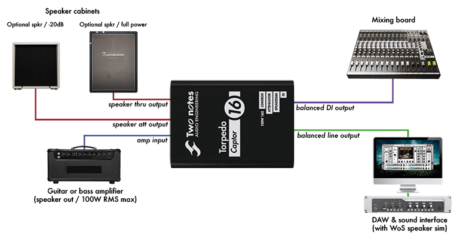
2. Front and rear panel
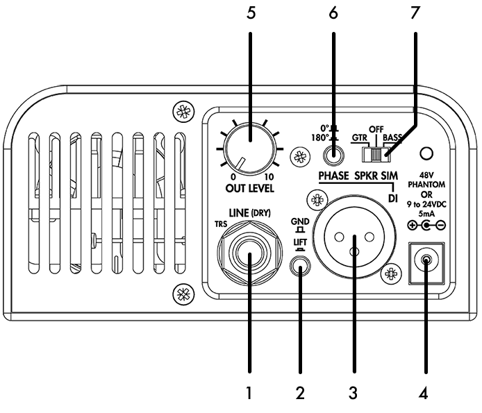
- Balanced line output (dry signal)
- Ground lift switch
- Balanced active DI output
- Power adapter connector for DI out and speaker simulation (phantom or 9-24V)
- Output level potentiometer
- Polarity switch
- Active speaker simulation switch
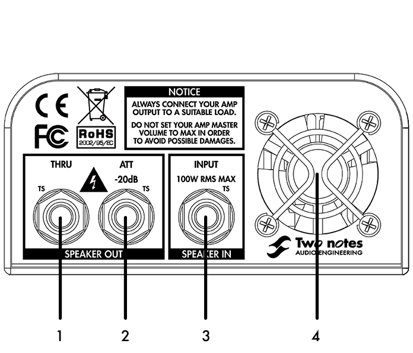
- Speaker Thru output
- -20dB attenuated speaker output
- Amplifier input
- Fan
3. Features
3.1 Loadbox
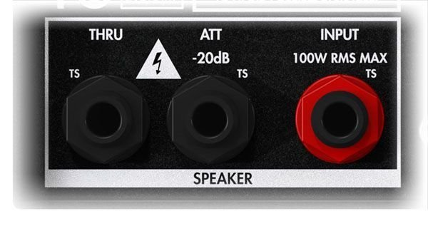
The speaker output of the amp connects to the SPEAKER INPUT of the Captor. You can't miss this input: it's the one with the red nut. Use a standard speaker cable for this connection (a pair of insulated conductors with no shielding).
The impedance of the speaker output of the amp should match the impedance of the Torpedo Captor (i.e., if your Captor is an 8 ohms version, use an 8 ohms speaker output on your amp). There is an exception to this though, if you are using the THRU output. Please refer to the THRU section for more explanations.
Admissible power and thermal security:
The Torpedo Captor is rated for 100 watts (assuming proper ventilation). Don't exceed that power, or the Captor will overheat and go into thermal security. This will cut the sound of the amplifier, putting it on a security load. If this happens, stop playing immediately. The Captor will resume correct operation after being allowed to cool down for a while.
The loadbox is cooled by a fan. Never cover or restrict the ventilation openings (on both the front and rear panel) or the unit may overheat and go into thermal security.
The phantom or external power supply is not needed to use the loadbox.
3.2 Thru output
If you connect a speaker cabinet to the THRU output, the internal loadbox is disconnected: your amp is directly connected to the speaker cabinet. As a result, the impedance of the speaker cabinet plugged into the THRU output should match the impedance of the amp. In this situation, the impedance of the Captor doesn't matter anymore: for example, you can use the 16 ohms output of your amp and a 16 ohms speaker cabinet in the THRU output, even if the Captor is a 4 or 8 ohms version.
The THRU output is useful to insert the Captor between your amp and speaker cabinet, as a means to simply pick up the sound of the amp. You can keep a speaker cabinet on stage for direct monitoring, and still get a properly picked-up sound with speaker simulation in the PA.
Use a standard speaker cable between the THRU output and the speaker cabinet.
3.3 Power attenuation
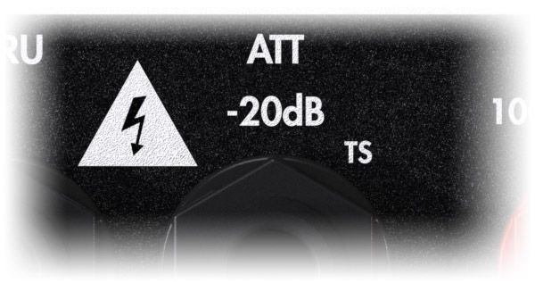
The ATT output provides a -20dB attenuation. Just plug a speaker cabinet in the ATT output (use a standard speaker cable for this connection), and crank up your amp while keeping a manageable volume.
The speaker cabinet plugged in the ATT output can have a different impedance than the amp. However, this will lead to changing the attenuation ratio, which may vary from the designed -20dB. Using a speaker cabinet with a higher impedance (for example a 16 ohms cabinet on an 8 ohms Captor) will lead to less attenuation (approximately -15dB). Using a speaker cabinet with a lower impedance (for example a 4 ohms cabinet on an 8 ohms Captor) will lead to more attenuation (approximately -25dB).
You can use both the THRU and ATT outputs at the same time, but the speaker at the ATT output will be much quieter, so it doesn't seem very useful.
3.4 Line output
The LINE output of the Captor connects to any product with a line input: an audio interface, an FX processor, another Torpedo product, and so on. This output is dry, meaning there is no speaker simulation applied to the signal: it's the raw signal coming straight out of the amp, from the SPEAKER INPUT. This dry signal should be processed with a speaker simulation before being monitored.
Once the LINE output is connected to an audio interface and a DAW, the signal can be processed with Wall of Sound. Please refer to the Wall of Sound section for more details.
Another possibility is to use a Torpedo hardware product to do the speaker simulation. For example, the LINE output can be connected to a Torpedo C.A.B.
When connecting the LINE output to a balanced jack input, use a balanced TRS jack cable if possible. Using an unbalanced TS jack cable (a standard guitar or patch cable) is possible, but may lead to added noise or interferences.
The level of the signal can be adjusted with the OUT level potentiometer.
The phantom or external power supply is not needed to use the LINE output.
3.5 DI output
The DI output of the Captor connects to any product with a mic input, usually a mixing console or audio interface. Contrary to the LINE output, the DI output includes a speaker simulation, which means it can be monitored directly, without using an external speaker simulation.
The level of the signal can be adjusted with the OUT level potentiometer.
The polarity of the DI output can be reversed with the PHASE switch. This switch does not affect the LINE output.
The ground of the DI output can be lifted (disconnected) with the GND/LIFT switch. It's often best to keep it in the GND position, but in some situations, lifting the ground could help prevent interferences.
The DI output is active: it needs a power supply to work. The simplest way to power the DI output is to use the 48V phantom power from the mic input. Alternatively, you can use an optional power adapter.
3.6 Speaker simulation
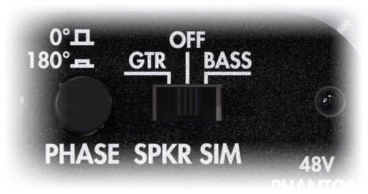
The speaker simulation embedded in the Captor is taken from our Le Preamp series. It's an analog simulation, featuring two models, Guitar and Bass, based on our Torpedo simulator. The Guitar model is based on our classic Brit VintC 4×12 picked up with a Dyn57. The Bass model is based on a mix of the vintage Fridge 8×10 and more modern Alu XL 4×10, picked up with a Cnd87.
The speaker simulation can be turned OFF, in which case the signal at the DI output is the dry, raw signal coming straight out of the amp.
The speaker simulation is not active on the LINE output. If you want to use the speaker simulation but need a jack connector, you can use an XLR-to-jack cable to connect the DI output to the jack input.
Setting up the Torpedo Captor
Here are some examples of guitar tracking or live uses of the Torpedo Captor. If you have any question regarding your own setup or would like to see other possibilities detailed in this manual, don't hesitate to contact us on our Help Desk.
Please refer to the above description of each feature for more details on which cable to use, what to pay attention to, or how to choose a specific setting that suits your particular configuration.
1. On stage with a regular speaker cabinet
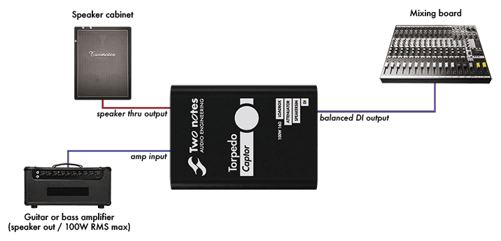
On stage, the Torpedo Captor shines by its simplicity. First, insert the Torpedo Captor between the amp and speaker cabinet. Then, connect the DI output to the mixing console, turn on the 48V phantom power on the mixing console, and select either the GTR or BASS setting of the SPKR SIM switch. That's all, your amp is miked!
This configuration leaves the speaker cabinet on stage, allowing for a direct monitoring. An interesting thing here is that the amp is still connected to the speaker cabinet, and not to the internal loadbox of the Captor. This means the impedance of the Captor is irrelevant: you can use any version of the Captor to do this.
If the speaker cabinet is too loud, you can take advantage of the Att output to reduce the volume, as follows:
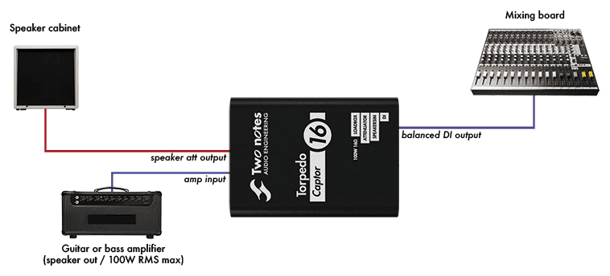
In this configuration, the amp is connected to the internal loadbox of the Captor. This means you have to match the impedance of the amp's speaker output and Captor.
Please note that, with either of these configurations, you can put a real microphone in front of the speaker and mix it with the DI output of the Captor. Alternatively, you can use either one as a backup for the other.
2. On a silent stage
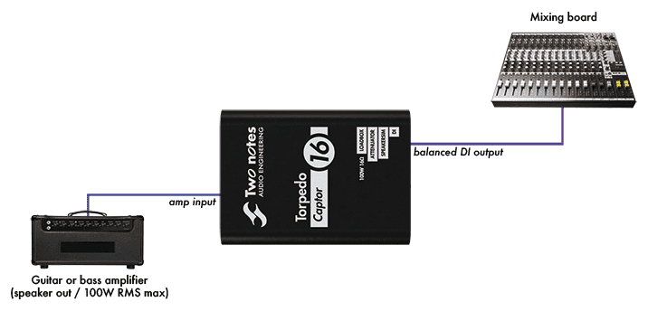
If silent miking is needed for a silent stage, you can remove the speaker cabinet of the previous configuration. Just connect the amp to the Torpedo Captor, and the DI output to the mixing console.
In this configuration, just like when using the Att output, the amp is connected to the internal loadbox of the Captor. You have to match the impedance of the amp's speaker output and Captor.
3. In the studio
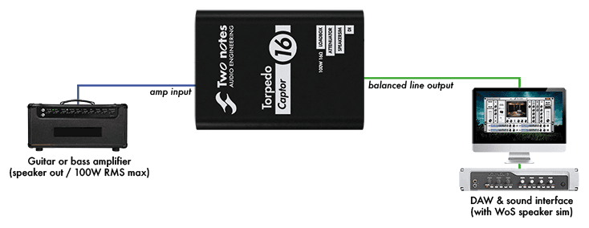
In the studio, it's best to use the dry signal of the amplifier and use the Wall of Sound plugin, for a more realistic speaker simulation. Plus, recording the dry signal means the virtual miking can be done and fine-tuned after the actual recording.
Just connect the amp to the Captor, and the line output to the audio interface. You'll have to route the input of the audio interface to a track in your DAW, and add the Wall of Sound plugin on this track. If needed, please refer to the manual of your specific DAW (and/or audio interface).
Please note that, like with the stage configurations, you can add a speaker cabinet (attenuated or not) for monitoring, and maybe use a microphone to record a real miked track. You can also use the DI output to record a speaker simulated track. This way, you can record and mix up to three tracks: real miking, speaker simulation of the Captor, speaker simulation through Wall of Sound.
4. Impedance selection guide
The effective impedance of the ensemble Torpedo Captor + speaker cabinet (i.e., the impedance actually seen by the amplifier) is as follows:
| My situation | Impedance |
|---|---|
| I have no speaker cabinet connected to the Captor | Impedance of the Captor |
| I have a speaker cabinet connected to the Att output | Impedance of the Captor |
| I have a speaker cabinet connected to the Thru output | Impedance of the speaker cabinet (see note hereunder) |
| I have a speaker cabinet connected to both the Thru and Att output | Impedance of the speaker cabinet connected to the Thru output (see note hereunder) |
Note: as soon as you plug a cable in the THRU output of the Torpedo Captor, the internal loadbox is disconnected. The amplifier connected to the Torpedo Captor is no longer connected to its internal loadbox, but to whatever is connected to the other end of this cable. As a result, if you connect a cable in the THRU output of the Captor with nothing else connected to the other end, your amplifier will not be connected to a proper load. The ATT output doesn't play a role here: its impedance, as seen by the amp, is negligible, and should not be considered as a proper load, with or without something plugged in it.
And if you are hesitating about which Torpedo Captor to get:
| My situation | Which version of Captor to get |
|---|---|
| I have a combo amplifier | Impedance of the combo's speaker cabinet |
| I have an amplifier with fixed impedance | Impedance of the amp |
| I have an amplifier with selectable impedance | All versions will work. We recommend the 8 ohms version, because it's the most common impedance out there. |
| I have an amplifier with selectable impedance and a speaker cabinet | Impedance of the speaker cabinet |
| I have one or several amplifiers and one or several speaker cabinets, and they all have (or can be set to) the same impedance | This same impedance |
| I have one or several amplifiers and one or several speaker cabinets, but they don't all have the same impedance | The impedance of the amp (or amps) you want to play silently. You can use the Captor with the others with the matching speaker cabinet in the Thru output |
Specifications
1. List of Power Amplifiers (available through Wall of Sound)
| Designation | Characteristics |
|---|---|
| SE 6L6 | Configuration Single Ended - Class A with 6L6 |
| SE EL34 | Configuration Single Ended - Class A with EL34 |
| SE EL84 | Configuration Single Ended - Class A with EL84 |
| SE KT88 | Configuration Single Ended - Class A with KT88 |
| PP 6L6 | Configuration Push-Pull - Class AB with 6L6 |
| PP EL34 | Configuration Push-Pull - Class AB with EL34 |
| PP EL84 | Configuration Push-Pull - Class AB with EL84 |
| PP KT88 | Configuration Push-Pull - Class AB with KT88 |
2. List of Cabinets (available through Wall of Sound)
| Designation | Inspired by |
|---|---|
| GUITAR cabinets | |
| PinnacleHG | Dr. Z ® “Z-Best®” Thiele Ported 2×12 with v30’s |
| Voice30Blue | Vox® AC30® loaded by the famous Celestion® Blue AlNiCo® |
| Tanger Fat | PPC412HP© 4×12 Orange® with Celestion® Heritage G12H (55Hz) and Celestion© G12M Heritage Greenback |
| Burn It | Brunetti® Dual Cab XL 2×12 half back with Eminence® The Governor |
| Recto Over | Mesa Rectifier 4×12 Cabinet. Equipped with a Celestion® Vintage 30 |
| BigBabyK100 | Zilla® FatBaby, 1×12 Closed Back, 8 Ohms. Equipped with a Celestion® G12K-100 |
| StudioZG12H | Zilla® Studio Pro, 2×12 Closed Back. Equipped with a 16ohm Vintage 30 and G12H Creamback 75 |
| BrownyBack | 4×12 perfect for the Eddie Van Halen “Brown Sound”, equipped with Celestion® Greenbacks |
| Brit 1935 | Marshall® 4×12, dating from 1971. Equipped with the original Celestion® “Rola” speakers |
| Fried30 | Friedman® 4×12 Vintage equipped with Celestion® G12M25 and V30. Close Mic’ing done in front of the V30’s |
| Ferret | Suhr® Badger 2×12″ OB equipped with Warehouse® Veteran30 |
| BoGreen | Bogner® 4×12 equipped with Greenbacks G12M25 Reissue at 16ohms |
| BASS cabinets | |
| Fridge 9 | Ampeg® V.9 - 9×10″ |
| New York | Markbass® 4×6″ equipped with 4×6″ Neodymium speakers custom made by B&C® |
| WGrandBlvd | Ampeg® B15N 1×15″ CB equipped with Jensen® C15N, Vintage Ceramic Speaker |
| Fat Mama | Ampeg® SVT-410HE 4×10 equipped with Eminence® Speakers |
3. List of Microphones (available through Wall of Sound)
| Designation | Inspired by |
|---|---|
| Dynamic 57 | Dynamic microphone Shure™ SM57 |
| Dynamic 421 | Dynamic microphone Sennheiser™ MD421 |
| Knightfall | Condenser microphone Blue™ Dragonfly |
| Condenser 87 | Condenser microphone Neumann™ U87 |
| Ribbon160 | Ribbon microphone Beyerdynamic™ M160N |
| Ribbon121 | Ribbon microphone Royer™ R121 |
| Bass 20 | Dynamic microphone Electrovoice™ RE20 |
| Bass 5 | Dynamic microphone Shure™ Beta52 |
4. Block Diagram
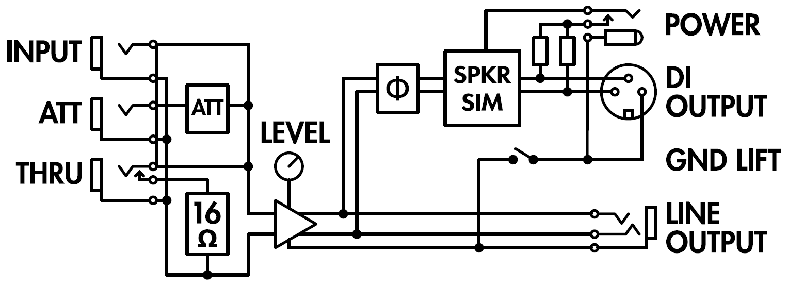
5. Reactive loadbox
- Input impedance
- 4, 8 or 16 Ohms
- Admissible power
- 100W RMS (see this article if your amplifier is more powerful)
- Fan powered by the amp
- the phantom or external power supply is not needed.
- Thermal security
- the amp and musician work in security.
6. Input / Output
- Speaker Input
- 1/4″ Jack unbalanced (TS, Tip/Sleeve)
- Speaker Att
- 1/4″ Jack unbalanced (TS) – Attenuation: -20dB
- Speaker Thru
- 1/4″ Jack unbalanced (TS) – Directly connected to Speaker Input. The loadbox is disconnected when a jack is inserted in this Thru output
- Line Output
- 1/4″ Jack balanced (TRS) – Impedance: approx 1 kOhms – Without speaker simulation
- DI Output
- XLR balanced – Impedance: 600 Ohms – With or without speaker simulation
7. Speaker sim
Guitar or Bass, analog, based on acclaimed Torpedo virtual cabinets.
- Guitar
- based on Brit VintC (4×12) - Dyn57
- Bass
- based on Fridge (8×10) / Alu XL (4×10) - Cnd87
8. Power
Power is required only for the XLR DI output and speaker simulation.
Phantom power or DC jack, 2.1×5.5mm, negative center.
- Voltage
- 9 to 24V DC
- Current
- 5mA
9. Dimensions & weight
175 x 126 x 62 mm
1 kg
10. Connectors wiring
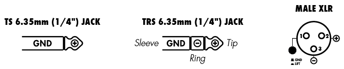
Technical support
Should you encounter a problem with your product or need help regarding any technical aspects, please note that Two notes Audio Engineering has developed on-line services to provide you with fast and efficient technical support, the Two notes Help Desk.
Don't hesitate to browse the Knowledgebase, which contains all sorts of useful information, or submit a ticket if you have any question or need assistance with a Two notes product.
1. Two notes Website
On the Two notes Audio Engineering website, you will find:
- news about the company and the products (news on the homepage),
- comprehensive information about the Torpedo Captor and its many applications (FAQ),
- firmware and software updates to download (products/Torpedo Captor/downloads),
- access to the Two notes Store where you can buy new cabinets,
- the Torpedo BlendIR software (products/Torpedo Captor/downloads),
- an official forum where you can share tips and advice with other Torpedo users (forum).
The Two notes Team often visits specialized forums to help out users.
2. E-mail
We do not offer technical support via e-mail. Please contact us via the Help Desk at the address above.